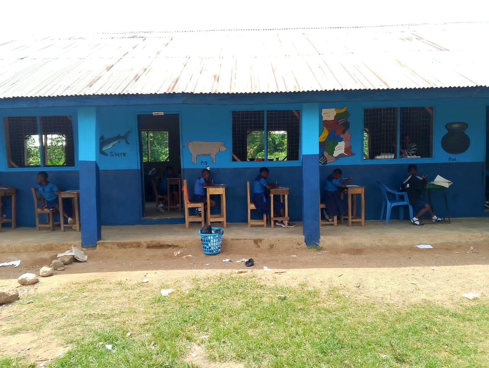

Emmanuel Oxford Educational Complex has successfully held its 2025 Graduation Ceremony, celebrating the achievements of its graduating pupils. The colourful event brought together parents, teachers, and invited guests to witness the academic and moral growth of the young graduates.
Emmanuel Oxford Educational Complex marked a significant milestone with the celebration of its 2025 Graduation Ceremony, held on the school premises with pomp and pageantry. The event, which brought together parents, guardians, teachers, and dignitaries from the community, was a heartwarming celebration of academic excellence, discipline, and the holistic development of the school’s young learners.
This year’s theme, “Shaping Minds, Building Futures,” reflected the school’s commitment to nurturing well-rounded individuals equipped with the knowledge and values needed for future success. The ceremony featured inspiring speeches from the Headmaster and guest speakers, who commended the pupils for their hard work and encouraged them to remain focused and determined in their educational pursuits.
Highlights of the program included cultural displays, poetry recitals, choreography, and musical performances that showcased the talents of the pupils. Awards were also presented to outstanding students in various categories, including academics, leadership, discipline, and creativity.
Parents expressed pride and joy as they watched their wards receive certificates and accolades. Many lauded the school for its dedication to quality education and character training. The ceremony concluded with a vote of thanks and a closing prayer, leaving lasting memories for both pupils and parents.
The 2025 graduation at Emmanuel Oxford Educational Complex was more than just a ceremony — it was a testament to the school’s unwavering mission to raise future leaders, one child at a time.

Basic Schools Revert to Old Curriculum Amidst Confusion
Teachers across Ghana have been left scrambling after a sudden directive to abandon the new standards-based curriculum and return to the old one. With months of lessons already taught under the new system, many educators now face the challenge of adjusting plans, re-teaching content, and managing confused pupils—all without updated materials or training. The shift has sparked frustration and calls for clearer communication from education authorities.
In a surprising turn of events, basic schools across the country have been directed to revert to the old curriculum, sparking confusion among teachers, parents, and education stakeholders. The decision comes after months of uncertainty surrounding the full implementation of the new standards-based curriculum introduced in recent years.
Many teachers, who had already adapted their lesson plans and teaching methods to the new curriculum, now face the challenge of undoing months of instruction and readjusting to the old framework. Some schools have expressed concern about the lack of clear communication, training, and adequate teaching materials to support such a reversal.
Despite these concerns, the Ghana Education Service has emphasized the need to ensure consistency in learning while efforts are made to address ongoing gaps in the new curriculum rollout. The sudden shift has reignited conversations about the preparedness of the education sector for reforms and the need for stronger stakeholder engagement in national curriculum decisions.
As schools work to adjust, parents and teachers alike are calling for transparency, stability, and timely resource allocation to minimize the impact on learners’ progress.